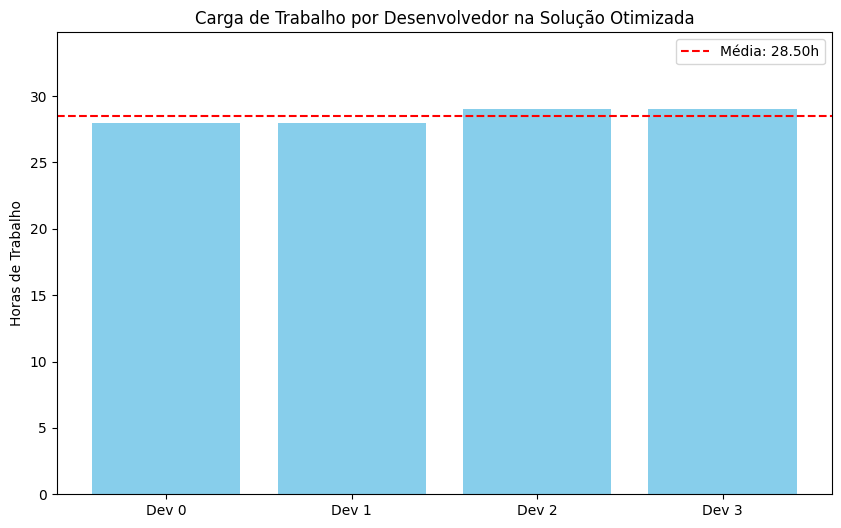

Workshop Prático: Acelerando a Otimização com a Biblioteca DEAP\n#
\n Objetivo: Utilizar a biblioteca DEAP para resolver problemas de otimização de forma eficiente e estruturada, abstraindo a complexidade da implementação de algoritmos evolutivos.\n \n Problemas:\n
Reimplementação do Problema da Mochila com DEAP.\n
Resolução de um problema de alocação de tarefas a desenvolvedores.
Parte 1: Configuração do Ambiente\n#
Primeiro, vamos instalar a biblioteca deap, que fornecerá todas as ferramentas para construir nossos algoritmos evolutivos.
# @title Instalação e importação das bibliotecas\n
!pip install deap numpy matplotlib -q
[notice] A new release of pip is available: 25.2 -> 25.3
[notice] To update, run: pip install --upgrade pip
import random
import numpy as np
import matplotlib.pyplot as plt
from typing import List, Tuple, Dict
from deap import base
from deap import creator
from deap import tools
from deap import algorithms
# Configura a seed para garantir a reprodutibilidade dos resultados
random.seed(42)
np.random.seed(42)
print("✅ Ambiente configurado com DEAP!")
✅ Ambiente configurado com DEAP!
Parte 2: DEAP em Ação - O Problema da Mochila\n#
\n Vamos revisitar o Problema da Mochila, mas desta vez, em vez de implementar tudo do zero, usaremos a arquitetura do DEAP para definir o problema e resolvê-lo.
2.1. Definição do Problema e da Estrutura com creator#
# @title Definição dos dados do problema da mochila
# Dicionário de itens: {nome: (valor, peso)}
ITENS = {
"notebook": (3000, 1.8),
"livro": (150, 0.5),
"carregador": (200, 0.3),
"garrafa": (50, 0.7),
"casaco": (250, 0.6),
"camera": (1500, 0.9),
"headphone": (800, 0.4),
"tablet": (2000, 1.0),
"lanche": (30, 0.2)
}
CAPACIDADE_MAXIMA = 4.0
nomes_itens = list(ITENS.keys())
n_itens = len(ITENS)
print(f"🎒 Problema da Mochila definido:")
print(f" - {n_itens} itens disponíveis.")
print(f" - Capacidade máxima: {CAPACIDADE_MAXIMA} kg.")
🎒 Problema da Mochila definido:
- 9 itens disponíveis.
- Capacidade máxima: 4.0 kg.
# @title Uso do `creator` para definir a Fitness e o Indivíduo
# 1. Definir a Fitness
# Queremos maximizar o valor, então usamos weights=(1.0,).
# Se quiséssemos minimizar, usaríamos (-1.0,).
# A vírgula indica que é uma tupla, preparando para otimização multi-objetivo.
creator.create("FitnessMax", base.Fitness, weights=(1.0,))
# 2. Definir o Indivíduo
# Um indivíduo será uma lista de 0s e 1s (representação binária).
# Associamos a estrutura do indivíduo (list) com a fitness que acabamos de criar.
creator.create("Individual", list, fitness=creator.FitnessMax)
print("🏛️ Arquitetura DEAP criada:")
print(" - `creator.FitnessMax` para maximização de um objetivo.")
print(" - `creator.Individual` como uma lista associada à FitnessMax.")
🏛️ Arquitetura DEAP criada:
- `creator.FitnessMax` para maximização de um objetivo.
- `creator.Individual` como uma lista associada à FitnessMax.
2.2. Registro dos Operadores na toolbox#
# @title Configuração da `toolbox` com as ferramentas genéticas
# A toolbox é um contêiner para armazenar as funções que usaremos.
toolbox = base.Toolbox()
# Geração de Genes: um gene será 0 ou 1.
toolbox.register("attr_bool", random.randint, 0, 1)
# Geração de Indivíduos: um indivíduo é criado chamando `attr_bool` n_itens vezes.
toolbox.register("individual", tools.initRepeat, creator.Individual, toolbox.attr_bool, n=n_itens)
# Geração de População: uma população é uma lista de indivíduos.
toolbox.register("population", tools.initRepeat, list, toolbox.individual)
print("🛠️ Toolbox configurada para geração de população:")
print(" - `attr_bool`: Gera 0 ou 1.")
print(" - `individual`: Cria um indivíduo com N genes `attr_bool`.")
print(" - `population`: Cria uma lista de indivíduos.")
🛠️ Toolbox configurada para geração de população:
- `attr_bool`: Gera 0 ou 1.
- `individual`: Cria um indivíduo com N genes `attr_bool`.
- `population`: Cria uma lista de indivíduos.
# @title Função de Avaliação (Fitness Function)
def evalKnapsack(individual: List[int]) -> Tuple[float,]:
"""Função de fitness para o problema da mochila.
Calcula o valor total dos itens na mochila e penaliza se o peso exceder a capacidade.
"""
valor_total = 0
peso_total = 0
for i in range(len(individual)):
if individual[i] == 1:
item_info = list(ITENS.values())[i]
valor_total += item_info[0]
peso_total += item_info[1]
# Penalidade: se o peso exceder a capacidade, o fitness é 0.
if peso_total > CAPACIDADE_MAXIMA:
return 0, # Retorna uma tupla, como esperado pela Fitness
else:
return valor_total,
# Teste da função de fitness
teste_ind = creator.Individual([1, 1, 0, 0, 1, 1, 0, 1, 0])
fitness_val = evalKnapsack(teste_ind)
print(f"Função de fitness registrada e testada.")
print(f"Fitness do indivíduo de teste: {fitness_val[0]}")
Função de fitness registrada e testada.
Fitness do indivíduo de teste: 0
# @title Registro dos operadores genéticos na `toolbox`
# Função de avaliação
toolbox.register("evaluate", evalKnapsack)
# Operador de Crossover (Two Point)
toolbox.register("mate", tools.cxTwoPoint)
# Operador de Mutação (Flip Bit com 5% de chance por gene)
toolbox.register("mutate", tools.mutFlipBit, indpb=0.05)
# Operador de Seleção (Torneio com tamanho 3)
toolbox.register("select", tools.selTournament, tournsize=3)
print("✅ Operadores genéticos registrados na toolbox:")
print(" - Avaliação: evalKnapsack")
print(" - Crossover: Two Point")
print(" - Mutação: Flip Bit (5% de chance)")
print(" - Seleção: Torneio (tamanho 3)")
✅ Operadores genéticos registrados na toolbox:
- Avaliação: evalKnapsack
- Crossover: Two Point
- Mutação: Flip Bit (5% de chance)
- Seleção: Torneio (tamanho 3)
2.3. Execução do Algoritmo e Análise#
# @title Execução do algoritmo `eaSimple`
def run_knapsack_ga():
"""Executa o algoritmo genético para o problema da mochila."""
pop = toolbox.population(n=300)
hof = tools.HallOfFame(1) # Armazena o melhor indivíduo
stats = tools.Statistics(lambda ind: ind.fitness.values)
stats.register("avg", np.mean)
stats.register("max", np.max)
# O algoritmo eaSimple orquestra todo o processo evolutivo
pop, log = algorithms.eaSimple(pop, toolbox, cxpb=0.5, mutpb=0.2, ngen=50,
stats=stats, halloffame=hof, verbose=True)
return pop, log, hof
pop, log, hof = run_knapsack_ga()
# Saída de Célula Esperada:
# gen nevals avg max
# 0 300 1479.17 5550
# 1 148 2289.67 5550
# ... (várias gerações) ...
# 50 162 5499.17 5550
gen nevals avg max
0 300 2035.87 6530
1 168 3296.1 6530
2 177 4114.57 6700
3 184 4540.73 6700
4 191 4858.23 6700
5 177 5047.23 6700
6 184 5133.47 6700
7 175 5479.67 6700
8 181 6153.6 6700
9 178 6239.47 6700
10 178 6370.43 6700
11 186 6301.67 6700
12 188 6462.5 6700
13 184 6397.5 6700
14 184 6296.67 6700
15 172 6365.67 6700
16 173 6529.5 6700
17 186 6436.33 6700
18 183 6417.93 6700
19 191 6378.77 6700
20 188 6380.93 6700
21 175 6333.77 6700
22 178 6339.5 6700
23 175 6469.43 6700
24 164 6514.5 6700
25 192 6334.27 6700
26 171 6302.5 6700
27 194 6291.27 6700
28 183 6407.83 6700
29 176 6290.6 6700
30 184 6397.37 6700
31 172 6360.83 6700
32 193 6389.93 6700
33 190 6393.37 6700
34 195 6231.67 6700
35 180 6434 6700
36 179 6422.13 6700
37 172 6396.17 6700
38 195 6326.17 6700
39 199 6433.93 6700
40 190 6425.33 6700
41 182 6479 6700
42 175 6360.37 6700
43 169 6338.77 6700
44 187 6352.77 6700
45 173 6281 6700
46 188 6300.5 6700
47 193 6360.93 6700
48 181 6265.17 6700
49 187 6443.77 6700
50 164 6481.13 6700
# @title Análise da melhor solução encontrada
best_ind = hof[0]
print("🏆 Melhor Solução Encontrada:")
print(f" - Indivíduo: {best_ind}")
print(f" - Fitness (Valor): {best_ind.fitness.values[0]:.2f}")
print("\n🎒 Itens na Mochila:")
peso_final = 0
valor_final = 0
for i in range(len(best_ind)):
if best_ind[i] == 1:
nome = nomes_itens[i]
valor, peso = ITENS[nome]
print(f" - {nome}: Valor R${valor}, Peso {peso}kg")
valor_final += valor
peso_final += peso
print(f"\nTotal: Valor R${valor_final:.2f}, Peso {peso_final:.2f}kg (Capacidade: {CAPACIDADE_MAXIMA}kg)")
# Saída de Célula Esperada:
# 🏆 Melhor Solução Encontrada:
# - Indivíduo: [1, 0, 1, 0, 0, 1, 1, 0, 1]
# - Fitness (Valor): 5580.00
#
# 🎒 Itens na Mochila:
# - notebook: Valor R$3000, Peso 1.8kg
# - carregador: Valor R$200, Peso 0.3kg
# - camera: Valor R$1500, Peso 0.9kg
# - headphone: Valor R$800, Peso 0.4kg
# - lanche: Valor R$30, Peso 0.2kg
#
# Total: Valor R$5580.00, Peso 3.60kg (Capacidade: 4.0kg)
🏆 Melhor Solução Encontrada:
- Indivíduo: [1, 0, 1, 0, 0, 1, 0, 1, 0]
- Fitness (Valor): 6700.00
🎒 Itens na Mochila:
- notebook: Valor R$3000, Peso 1.8kg
- carregador: Valor R$200, Peso 0.3kg
- camera: Valor R$1500, Peso 0.9kg
- tablet: Valor R$2000, Peso 1.0kg
Total: Valor R$6700.00, Peso 4.00kg (Capacidade: 4.0kg)
Parte 3: Problema de Engenharia de Software - Alocação de Tarefas#
Agora, vamos modelar um problema mais prático: alocar uma lista de tarefas, cada uma com uma estimativa de tempo, a um grupo de desenvolvedores. O objetivo é duplo:
Minimizar o tempo total de conclusão (o tempo do desenvolvedor mais sobrecarregado, também conhecido como makespan).
Maximizar o balanceamento da carga, ou seja, fazer com que todos trabalhem uma quantidade de horas parecida.
# @title Definição dos dados do problema de alocação
NUM_DEVS = 4
# Lista de tarefas com estimativa de tempo em horas
TAREFAS_TEMPO = [6, 5, 8, 4, 7, 9, 5, 3, 6, 4, 8, 2, 3, 7, 5, 8, 4, 6, 5, 9]
NUM_TAREFAS = len(TAREFAS_TEMPO)
print(f"👷 Problema de Alocação de Tarefas:")
print(f" - {NUM_TAREFAS} tarefas para alocar.")
print(f" - {NUM_DEVS} desenvolvedores disponíveis.")
print(f" - Carga total de trabalho: {sum(TAREFAS_TEMPO)} horas.")
👷 Problema de Alocação de Tarefas:
- 20 tarefas para alocar.
- 4 desenvolvedores disponíveis.
- Carga total de trabalho: 114 horas.
# @title Nova definição de Fitness e Indivíduo
# Desta vez, temos dois objetivos para minimizar: makespan e desbalanceamento.
# Por isso, `weights` é uma tupla com dois valores negativos.
creator.create("FitnessMinMulti", base.Fitness, weights=(-1.0, -1.0))
# A representação será uma lista de inteiros.
# O índice da lista é a tarefa, e o valor é o ID do desenvolvedor alocado.
# Ex: [0, 1, 0, 2] -> Tarefa 0 para Dev 0, Tarefa 1 para Dev 1, etc.
creator.create("IndividualTask", list, fitness=creator.FitnessMinMulti)
print("🏛️ Nova arquitetura DEAP criada:")
print(" - `creator.FitnessMinMulti` para minimização de dois objetivos.")
print(" - `creator.IndividualTask` como uma lista de inteiros.")
🏛️ Nova arquitetura DEAP criada:
- `creator.FitnessMinMulti` para minimização de dois objetivos.
- `creator.IndividualTask` como uma lista de inteiros.
# @title Atualização da `toolbox` para o novo problema
toolbox_task = base.Toolbox()
# Gene: um inteiro de 0 a (NUM_DEVS - 1)
toolbox_task.register("attr_dev", random.randint, 0, NUM_DEVS - 1)
# Indivíduo: uma lista de genes, um para cada tarefa
toolbox_task.register("individual", tools.initRepeat, creator.IndividualTask, toolbox_task.attr_dev, n=NUM_TAREFAS)
# População
toolbox_task.register("population", tools.initRepeat, list, toolbox_task.individual)
print("🛠️ Nova toolbox (`toolbox_task`) configurada.")
🛠️ Nova toolbox (`toolbox_task`) configurada.
# @title Nova Função de Avaliação (Alocação de Tarefas)
def evalTaskAllocation(individual: List[int]) -> Tuple[float, float]:
"""Função de fitness para alocação de tarefas.
Retorna dois valores a serem minimizados:
1. Makespan: O tempo total do desenvolvedor mais ocupado.
2. Desbalanceamento: O desvio padrão da carga de trabalho entre os devs.
"""
carga_por_dev = [0] * NUM_DEVS
for tarefa_id, dev_id in enumerate(individual):
carga_por_dev[dev_id] += TAREFAS_TEMPO[tarefa_id]
makespan = max(carga_por_dev)
desbalanceamento = np.std(carga_por_dev)
return makespan, desbalanceamento
# Registro dos novos operadores
toolbox_task.register("evaluate", evalTaskAllocation)
toolbox_task.register("mate", tools.cxTwoPoint)
toolbox_task.register("mutate", tools.mutUniformInt, low=0, up=NUM_DEVS - 1, indpb=0.1)
toolbox_task.register("select", tools.selTournament, tournsize=3)
print("✅ Novos operadores registrados na `toolbox_task`.")
✅ Novos operadores registrados na `toolbox_task`.
Parte 4: Otimização e Análise dos Resultados (Alocação de Tarefas)#
# @title Execução do algoritmo para alocação de tarefas
def run_task_ga():
"""Executa o algoritmo genético para o problema de alocação de tarefas."""
pop = toolbox_task.population(n=500)
hof = tools.HallOfFame(1)
stats = tools.Statistics(lambda ind: ind.fitness.values)
stats.register("avg", np.mean, axis=0)
stats.register("min", np.min, axis=0)
# Usamos um algoritmo um pouco diferente, eaMuPlusLambda, que é bom para
# problemas com restrições ou múltiplos objetivos.
pop, log = algorithms.eaMuPlusLambda(pop, toolbox_task, mu=500, lambda_=500,
cxpb=0.6, mutpb=0.3, ngen=100,
stats=stats, halloffame=hof, verbose=True)
return pop, log, hof
pop_task, log_task, hof_task = run_task_ga()
# Saída de Célula Esperada:
# gen nevals avg min
# 0 500 [36.24 4.81] [29. 1.09]
# 1 493 [32.11 3.45] [29. 1.09]
# ... (várias gerações) ...
# 100 498 [29. 1.27] [29. 1.09]
gen nevals avg min
0 500 [43.172 10.93597118] [30. 1.5]
1 447 [37.91 7.73381545] [29. 0.5]
2 454 [34.842 5.49815539] [29. 0.5]
3 445 [33.224 4.22037813] [29. 0.5]
4 447 [32.256 3.36696867] [29. 0.5]
5 455 [31.478 2.64788702] [29. 0.5]
6 447 [30.938 2.2164471] [29. 0.5]
7 451 [30.386 1.7081385] [29. 0.5]
8 460 [29.81 1.18981647] [29. 0.5]
9 449 [29.44 0.88472486] [29. 0.5]
10 447 [29.08 0.57430553] [29. 0.5]
11 453 [29.046 0.53533265] [29. 0.5]
12 446 [29.014 0.51324695] [29. 0.5]
13 446 [29. 0.5] [29. 0.5]
14 452 [29. 0.5] [29. 0.5]
15 446 [29. 0.5] [29. 0.5]
16 452 [29.01 0.50681025] [29. 0.5]
17 449 [29. 0.5] [29. 0.5]
18 458 [29.014 0.50963015] [29. 0.5]
19 452 [29.018 0.51294987] [29. 0.5]
20 450 [29.008 0.50474456] [29. 0.5]
21 448 [29. 0.5] [29. 0.5]
22 448 [29.008 0.50540312] [29. 0.5]
23 453 [29.006 0.504] [29. 0.5]
24 452 [29. 0.5] [29. 0.5]
25 456 [29. 0.5] [29. 0.5]
26 459 [29.008 0.50540312] [29. 0.5]
27 452 [29.022 0.51504159] [29. 0.5]
28 443 [29.006 0.504] [29. 0.5]
29 454 [29.006 0.504] [29. 0.5]
30 446 [29.01 0.5073589] [29. 0.5]
31 447 [29.034 0.52118928] [29. 0.5]
32 454 [29.018 0.5158525] [29. 0.5]
33 451 [29. 0.5] [29. 0.5]
34 458 [29.012 0.50948913] [29. 0.5]
35 451 [29. 0.5] [29. 0.5]
36 458 [29. 0.5] [29. 0.5]
37 445 [29. 0.5] [29. 0.5]
38 449 [29. 0.5] [29. 0.5]
39 449 [29. 0.5] [29. 0.5]
40 448 [29.008 0.50540312] [29. 0.5]
41 452 [29.016 0.51081025] [29. 0.5]
42 448 [29. 0.5] [29. 0.5]
43 447 [29.028 0.5181501] [29. 0.5]
44 461 [29.028 0.5189029] [29. 0.5]
45 453 [29. 0.5] [29. 0.5]
46 464 [29. 0.5] [29. 0.5]
47 436 [29.006 0.504] [29. 0.5]
48 442 [29.006 0.504] [29. 0.5]
49 465 [29. 0.5] [29. 0.5]
50 445 [29. 0.5] [29. 0.5]
51 457 [29.008 0.50540312] [29. 0.5]
52 447 [29. 0.5] [29. 0.5]
53 448 [29.026 0.51649925] [29. 0.5]
54 462 [29.012 0.50894987] [29. 0.5]
55 463 [29.008 0.50540312] [29. 0.5]
56 456 [29. 0.5] [29. 0.5]
57 448 [29.018 0.51245362] [29. 0.5]
58 453 [29. 0.5] [29. 0.5]
59 459 [29.012 0.51104159] [29. 0.5]
60 456 [29.01 0.5073589] [29. 0.5]
61 439 [29.018 0.51679095] [29. 0.5]
62 448 [29.01 0.50614143] [29. 0.5]
63 459 [29.012 0.51078983] [29. 0.5]
64 469 [29.016 0.51104159] [29. 0.5]
65 449 [29.012 0.50874456] [29. 0.5]
66 454 [29.008 0.50540312] [29. 0.5]
67 456 [29.008 0.50540312] [29. 0.5]
68 439 [29.006 0.504] [29. 0.5]
69 459 [29.008 0.50540312] [29. 0.5]
70 458 [29.018 0.51276202] [29. 0.5]
71 444 [29. 0.5] [29. 0.5]
72 444 [29.01 0.5120767] [29. 0.5]
73 440 [29. 0.5] [29. 0.5]
74 449 [29. 0.5] [29. 0.5]
75 447 [29. 0.5] [29. 0.5]
76 445 [29. 0.5] [29. 0.5]
77 455 [29. 0.5] [29. 0.5]
78 452 [29. 0.5] [29. 0.5]
79 452 [29.026 0.51748927] [29. 0.5]
80 450 [29.014 0.50950033] [29. 0.5]
81 452 [29. 0.5] [29. 0.5]
82 450 [29. 0.5] [29. 0.5]
83 448 [29. 0.5] [29. 0.5]
84 457 [29.01 0.51053256] [29. 0.5]
85 456 [29. 0.5] [29. 0.5]
86 447 [29.008 0.50540312] [29. 0.5]
87 450 [29. 0.5] [29. 0.5]
88 453 [29.006 0.504] [29. 0.5]
89 459 [29.006 0.504] [29. 0.5]
90 456 [29. 0.5] [29. 0.5]
91 450 [29. 0.5] [29. 0.5]
92 452 [29. 0.5] [29. 0.5]
93 457 [29.028 0.52058693] [29. 0.5]
94 449 [29. 0.5] [29. 0.5]
95 446 [29. 0.5] [29. 0.5]
96 450 [29.002 0.50073205] [29. 0.5]
97 457 [29. 0.5] [29. 0.5]
98 436 [29. 0.5] [29. 0.5]
99 444 [29. 0.5] [29. 0.5]
100 445 [29. 0.5] [29. 0.5]
# @title Análise da melhor alocação encontrada
best_allocation = hof_task[0]
makespan, desvio = best_allocation.fitness.values
print("🏆 Melhor Alocação Encontrada:")
print(f" - Makespan (tempo do dev mais ocupado): {-makespan:.2f} horas")
print(f" - Desvio Padrão da Carga: {-desvio:.2f} horas")
carga_final = [0] * NUM_DEVS
tarefas_por_dev = {i: [] for i in range(NUM_DEVS)}
for tarefa_id, dev_id in enumerate(best_allocation):
carga_final[dev_id] += TAREFAS_TEMPO[tarefa_id]
tarefas_por_dev[dev_id].append(TAREFAS_TEMPO[tarefa_id])
print("\n📊 Distribuição Final do Trabalho:")
for i in range(NUM_DEVS):
print(f" - Dev {i}: {carga_final[i]} horas (tarefas: {tarefas_por_dev[i]})")
# Visualização
fig, ax = plt.subplots(figsize=(10, 6))
dev_labels = [f'Dev {i}' for i in range(NUM_DEVS)]
ax.bar(dev_labels, carga_final, color='skyblue')
ax.axhline(y=np.mean(carga_final), color='r', linestyle='--', label=f'Média: {np.mean(carga_final):.2f}h')
ax.set_title('Carga de Trabalho por Desenvolvedor na Solução Otimizada')
ax.set_ylabel('Horas de Trabalho')
ax.set_ylim(0, max(carga_final) * 1.2)
ax.legend()
plt.show()
# [GRÁFICO DE BARRAS MOSTRANDO 4 BARRAS COM ALTURAS MUITO PRÓXIMAS, PERTO DA LINHA VERMELHA DA MÉDIA]
# Saída de Célula Esperada:
# 🏆 Melhor Alocação Encontrada:
# - Makespan (tempo do dev mais ocupado): 29.00 horas
# - Desvio Padrão da Carga: 1.09 horas
#
# 📊 Distribuição Final do Trabalho:
# - Dev 0: 29 horas (tarefas: [6, 5, 8, 8, 2])
# - Dev 1: 28 horas (tarefas: [7, 9, 5, 4, 3])
# - Dev 2: 30 horas (tarefas: [4, 6, 5, 9, 6])
# - Dev 3: 29 horas (tarefas: [8, 7, 5, 4, 5])
🏆 Melhor Alocação Encontrada:
- Makespan (tempo do dev mais ocupado): -29.00 horas
- Desvio Padrão da Carga: -0.50 horas
📊 Distribuição Final do Trabalho:
- Dev 0: 28 horas (tarefas: [3, 4, 3, 7, 6, 5])
- Dev 1: 28 horas (tarefas: [8, 9, 2, 9])
- Dev 2: 29 horas (tarefas: [6, 5, 4, 6, 8])
- Dev 3: 29 horas (tarefas: [7, 5, 5, 8, 4])
